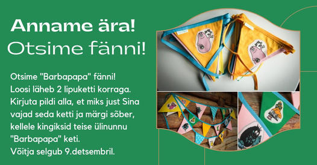
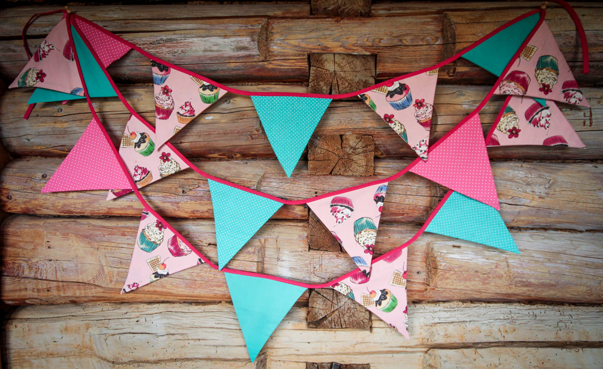
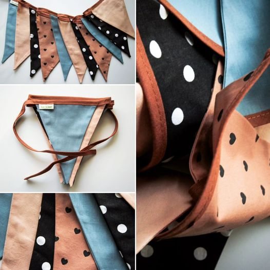

Umbes pooled-pooltest lastest teavad multikat "Barbapapa". Paljud ei tea, ja see on täiesti OK. Aga kuna meile vaatas ükspäev vastu selline kangas, siis tuli see ära osta ja kettideks teha. Nüüd otsimegi tõelisi fänne, kes päriselt tahaks Barbade ketti endale. Anname rõõmuga välja! Kirjuta pildi alla oma osalemissoovist ja märgi sõber, kellele kingiksid samasuguse. Võitja kuulutame välja 9.detsembril. NB! ketist puudub Barbabravo 🙂
Kui lähed otsima rohelist kangast, siis saatus saadab sulle muhvineid! Siin on kaks 5m pikka lipuketti. Nad on natuke erinevad. Ühel on vahelippude peal täppidega roosat ja täppidega türkiisi, teisel on ainult türkiisi ja paelad on erinevad. Õmmeldud Uuskasutuskeskusest ostetud seelikust. Mõtle, äkki Sinul on mõni äge kodukohviku perenaine, kes rõõmustaks sellise keti üle ja vuhviks oma kohviku suvel üles. 25€ tk. Küsi endale!
Saatsime välja õnnestunud "mängu pruuni tooniga". Sellised murdunud toonides kombinatsioonid on alati nii ägedad. Seekord said peategeleasteks H&M laste suvepükstest tehtud lipud, hakkasime neile kõrvale sobilikku otsima ja nii see kett koos sinakashallliga elama hakkas.
